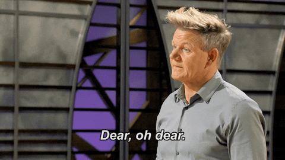
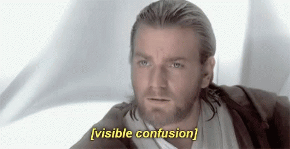
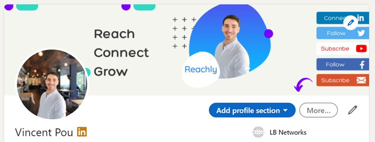
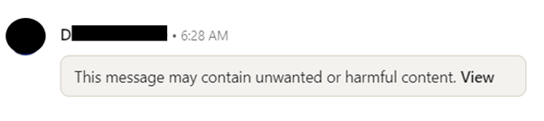
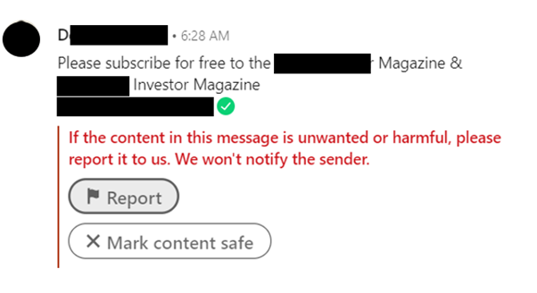

If you’re ready this article you’ve probably tried LinkedIn outreach already (great! 😉), but you might have experienced a low connection acceptance rate or a low response rate to your messages.
Don’t give up! Mastering your cold approach on LinkedIn is not as easy as it seems, but with a little bit of learning you can start killing it.
Today we’re going to talk about the thing no one wants to hear, your mistakes! But hey, everyone makes some mistakes when trying to figure out the best process, and I can tell you that I made plenty myself.
Let’s focus on the top 5 things that kill your response rate on LinkedIn.
Table of Contents
1. Having an incomplete profile2. Not spending enough time targeting
3. Using generic copywriting
4. Making mistakes while using automation
5. Getting flagged by LinkedIn
1. Having an incomplete profile
That’s the very first thing you need to worry about. Your profile is the first thing people see on LinkedIn when interacting with you, it’s your LinkedIn identity.
It’s extremely important to build trust right away by having a complete and up to date profile, and even more, it’s important that your profile communicate your value as a connection, what you have to offer.
First you need to have a photo of yourself (not your company logo, not your cat or dog, and not you skiing), make it as professional as you can – respecting your industry codes of course, you’re not going to rock a navy suit and tie if you’re working at a start-up, or a Star Wars t-shirt if you’re in banking.
You might also want to add a background picture, ideally this picture should describe what you do in just a few words, and include at least one CTA. CTAs can aim to get your profile viewers to subscribe to a newsletter, follow you or your page, anything that can make them show interest.
Here’s an example of my own profile (‘what you do says more than what you say’ 😊)
The photo is quite professional, the background picture is simple with three ideas I wanted to communicate, and the CTAs are on the right pointing to the bottom to the page for more information.
Once you’ve spend some time perfecting your image, you can now focus on the text part of your profile – for the length’s sake I’m not going to dive into too much details here.
2. Not spending enough time targeting
Targeting is such a big part of the success of a marketing strategy. Not being prepared enough when launching campaigns is often detrimental and leads to poor results, which makes no one happy.
There are two main thing we need to focus on when engaging on LinkedIn, the first one is to identify your target audience and to create your buyer persona and the second is to use LinkedIn to target this audience.
LinkedIn offers plenty of ways to search for profile to target, but you must spend time thinking about the best way to reach your target audience.
The search engine on the platform is a great place to start – you can use a variety of filters to extract profiles that match your audience.
You can also target profile by their activity, which is a level of targeting above. For example, you can contact people who are in a certain LinkedIn group, who post content or even who engage with content!
3. Using generic copywriting
If your LinkedIn profile is the face of your marketing campaign, the copywriting is certainly its heart.
What you have to say and how you say it is what drives your responses, it’s also true for every marketing channel, but it’s even more true for LinkedIn. Users are literally bombarded with generic messages, it’s always pretty much the same format and there’s next to no personalisation.
Don’t do that.
Your messages should always sound authentic and natural, not like they were sent for the 1500th time.
To do that, try to make the message about what you share with the person you’re contacting, avoid making it all about yourself and your business, but rather about how you can add value to one another.
A good way to have a good response rate is to base your outreach on a common ground, something your prospect and you can relate to. The aim is to be linked to something that interests your target so you can be associated with it.
4. Making mistakes while using automation
Now your profile is spotless, your targeting is on point and your copywriting could get anyone to respond to your connection request or message. But, it still takes a long time to send all these one by one, and frankly you’re not going to spend all day doing this.
So how do we scale this? Don’t worry, we have the solution for you! 😉
You can automate these tasks on LinkedIn by using our service -> here’s where it’s happening.
LinkedIn automation is fantastic, we can agree on that. But we need to be careful as some mistakes can reduce all your efforts to zero.
These mistakes can be related to format – for instance, your placeholders aren’t working properly and you’re sending ‘Hi {{first_name}’ to a bunch of contacts (guilty), your link leads to a dead end, or there’s a horrible typo that the 500 people you’re targeting will see but not you, etc.
They can also be related to process – the time frames haven’t been properly entered and you end up sending messages at 2am on a Saturday.
This can happen to anyone, but if you let the pros do it for you, your chance of getting it right dramatically increase 😉.
5. Getting flagged by LinkedIn
The last thing that kills your response rate on LinkedIn is getting flagged. But what does it mean?
It means LinkedIn thinks you’re a spammer or you’re attempting to send fishing messages. This happens when you use automation in the wrong way possible and contact everyone and anyone. It happens also when your targeting hasn’t been set and you start sending waves of messages and requests that aren’t accepted.The algorithm then thinks your outreach is undesirable to LinkedIn users and flags you.
In practice, it looks like this:
When you click on ‘View’, it triggers this:
This is an awful example of LinkedIn outreach, and I’m not surprised they were flagged as spam. There is no targeting, and zero personalization whatsoever. I’m pretty sure the response rate here was close to nothing (not even talking about the subscriptions!).
But don’t worry if you stick to the best practices and apply the tips we’ve been giving you, this should never happen to you!
And if you're ready to make the most of LinkedIn for your business, you can start using
our service today.
We can help yo grow you client base and expand you reach, let's chat.
😉